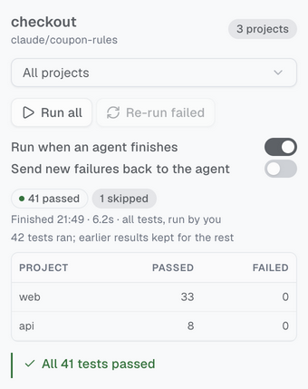

Test Runner for Orca
워크스페이스의 테스트를 오른쪽 사이드바에서 실행하는 Orca 플러그인이에요.
에이전트가 작업 한 턴을 끝내면, 에이전트가 바꾼 코드와 관련된 테스트를 다시 돌려요. 실패는 클릭 한 번으로 그 에이전트에게 돌아가요. 재현 명령이 들어간 한 줄짜리 프롬프트로요. 원하면 자동으로 돌려보내게 할 수도 있어요.
- Vitest, Jest, Playwright, Cypress, Gradle, Maven, pytest를 알아서 찾아요
- 모노레포는 패키지와 러너마다 프로젝트를 하나씩 만들어요
- 불안정한(flaky) 테스트는 다시 돌려서 표시하고, 에이전트에게 보내지 않아요
- 새로 실패한 테스트를 표시해서, 마지막 변경이 무엇을 깨뜨렸는지 알 수 있어요
- 결과가 Orca 상태바에 보이고, 누르면 테스트를 실행해요
- Orca 언어 설정에 따라 영어나 한국어로 보여요

설치
Orca에서 설정 → Plugins를 열고 Test Runner를 검색해 설치하세요. 터미널에서는 이렇게 설치해요.
orca plugin install h00ns/test-runner-for-orca실행 전에 Orca가 플러그인이 요청하는 권한을 보여줘요. 설치한 뒤 오른쪽 사이드바에서 Test Runner 탭을 여세요. Orca 1.4.260 이상이 필요해요.
에이전트에게 설정 맡기기
대부분의 프로젝트는 Test Runner가 알아서 찾아요. 설정 파일이 필요하거나 팀이 함께 쓸 설정을 커밋하고 싶다면, 워크스페이스의 에이전트에게 아래 프롬프트를 붙여넣으세요. 에이전트가 .orca-test-runner.json을 만들고 스위트마다 실제로 실행되는지 확인해요. 패널은 다음에 열 때, 또는 다시 확인을 누르면 새 파일을 읽어요.
이 레포에 Test Runner for Orca 설정을 해줘. 레포 루트에 .orca-test-runner.json을 만들어.
1. 테스트 스위트를 모두 찾아줘: Vitest, Jest, Playwright, Cypress, Gradle, Maven, pytest. 모든 package.json(워크스페이스 패키지 포함)과 test 스크립트, 러너 설정 파일, build.gradle(.kts), pom.xml, pyproject.toml을 확인해.
2. 스위트마다 "projects"에 항목을 하나씩 넣어: "name", "root"(레포 루트 기준 폴더, 루트면 생략), "runner"(vitest, jest, playwright, cypress, gradle, maven, pytest 중 하나).
3. "args"는 설정 파일 지정처럼 꼭 필요할 때만, test 스크립트가 실행하는 방식 그대로 넣어. 리포터, 출력 파일, watch, 커버리지 옵션은 넣지 마. Test Runner가 직접 붙여. "env"는 테스트에 필요한 변수만 넣어.
4. 느린 스위트는 "autoRun": false로 해줘: 브라우저 테스트(Playwright, Cypress)와 서버나 DB가 떠 있어야 하는 테스트.
5. 파일 맨 앞에 "$schema": "https://raw.githubusercontent.com/h00ns/test-runner-for-orca/main/schema/orca-test-runner.schema.json"을 넣고, 주석 없는 올바른 JSON으로 만들어.
6. 스위트마다 그 러너와 args로 한 번씩 실행해서 동작하는지 확인해. 끝나면 무엇을 설정했는지, 뺀 게 있으면 왜 뺐는지 알려줘.지원하는 러너
| 러너 | 찾는 기준 | 에이전트가 끝나면 | 실패만 다시 |
|---|---|---|---|
| Vitest | package.json의 vitest, vitest.config.* | 관련 테스트 | 파일 단위 |
| Jest | package.json의 jest, jest.config.* | 관련 테스트 | 파일 단위 |
| Playwright | @playwright/test, playwright.config.* | 기본으로 꺼짐 | 파일 단위 |
| Cypress | cypress, cypress.config.* | 기본으로 꺼짐 | 파일 단위 |
| Gradle | build.gradle(.kts), settings.gradle(.kts) | 전체 | 전체 |
| Maven | pom.xml | 전체 | 전체 |
| pytest | pytest.ini, pyproject.toml의 [tool.pytest…], conftest.py | 전체 | 파일 단위 |
JS 러너는 각 패키지에서 직접 실행해서 npm, pnpm, yarn 모두 동작해요. Jest는 --forceExit로 실행해서, 테스트가 서버를 열어둔 채 끝나도 실행이 멈추지 않아요. 커버리지는 끄고 실행해서, 일부만 실행할 때 커버리지 기준 때문에 실패하지 않아요. Gradle과 Maven은 프로젝트에 ./gradlew, ./mvnw가 있으면 그걸 쓰고, pytest는 .venv나 venv가 있으면 그걸 써요. 이 셋은 JUnit XML 리포트에서 결과를 읽어요.
Playwright 1.49는 Orca와 상관없이 Node 24에서 멈춰요. 1.65는 정상 동작해요.
에이전트가 끝나면
- Orca가 워크스페이스의 에이전트가 한 턴을 끝냈다고 알려줘요.
- 코드가 마지막 실행 때와 같으면 아무것도 실행하지 않아요.
git status가 아니라 내용으로 비교해요. - 바뀌었다면 마지막 실행 이후 바뀐 파일로 테스트를 골라요. Vitest와 Jest는 그 파일을 import하는 테스트만 실행하고, 다른 러너는 자기 폴더가 바뀌었을 때 전체를 실행해요. 브라우저 테스트는 설정 파일에서 켜지 않으면 빠져요. 워크스페이스의 첫 자동 실행, 파일 삭제나 이름 변경, git이 아닌 폴더에서는 전체를 실행해요.
- 일부만 실행한 경우 나머지는 이전 결과를 유지해요. 다시 돌리지 않은 실패도 계속 보여요.
- 실패한 테스트는 한 번 더 돌려요. 두 번째에 통과하면 불안정으로 표시해요. 나머지는 직전 실행과 비교해서, 그때 통과했던 것은 새 실패로 표시해요.
- 테스트가 실패하기 시작하거나 다시 통과하면 알림으로 알려줘요.
실패 돌려보내기
에이전트에게 맡기기를 누르면 워크스페이스에서 쉬고 있는 에이전트에게 실패를 입력해요. 새 실패만과 에이전트에게 전부 맡기기는 여러 개를 한 번에 보내요. 열려 있는 에이전트가 없으면 설정에서 고른 에이전트를 새로 띄워서 맡겨요. 작업 중이거나 권한 승인을 기다리는 에이전트에게는 절대 입력하지 않아요.
에이전트는 이런 한 줄을 받아요.
The test "cart › applies the coupon once" in apps/web/src/cart.test.ts:42 is failing. Error: AssertionError: expected 8000 to be 9000 … Reproduce with: cd apps/web && npx vitest run src/cart.test.ts -t "applies the coupon once" Fix the code (or the test, if the test itself is wrong) and re-run it until it passes.새 실패를 에이전트에게 다시 보내기를 켜면 자동 실행마다 이 과정이 저절로 일어나요. 에이전트의 작업이 만든 실패를 방금 끝낸 그 에이전트에게 보내고, 에이전트가 고치면 다음 실행이 이어져요. 설정한 횟수(기본 3회)가 지나면 멈추고 알려줘요. 사용자가 중단한 턴은 건너뛰고, 다른 에이전트에게 입력하거나 에이전트를 새로 띄우지 않아요.
모노레포
pnpm-workspace.yaml이나 package.json의 workspaces를 읽어서 패키지와 러너마다 프로젝트를 하나씩 만들어요. 루트가 패키지들을 위해 러너를 설치만 해둔 경우에는 루트 자체는 실행하지 않아요. 루트에 자체 설정(Vitest workspace, Jest projects)이 있으면 루트가 패키지들을 대신 실행해요. 패널에서 프로젝트를 하나만 골라 실행할 수도 있어요.
설정 파일
에이전트에게 맡길 수도 있어요. 대부분의 레포는 자동 감지로 충분해요. 그 밖의 경우에는 워크스페이스 루트에 .orca-test-runner.json을 두고 커밋하면 팀이 같은 설정을 써요.
{
"$schema": "https://raw.githubusercontent.com/h00ns/test-runner-for-orca/main/schema/orca-test-runner.schema.json",
"autoRunScope": "related",
"env": { "TZ": "UTC" },
"projects": [
{ "name": "web", "root": "apps/web", "runner": "vitest", "args": ["--config", "vitest.unit.config.ts"] },
{ "name": "api", "root": "services/api", "runner": "gradle" },
{ "name": "e2e", "root": "apps/web", "runner": "playwright", "autoRun": false }
]
}| 키 | 의미 |
|---|---|
projects | 자동 감지 대신 실행할 프로젝트 목록이에요. 각 항목은 root 폴더(기본값: 워크스페이스 루트)를 가지고, 선택적으로 runner(비우면 자동 감지), name, 러너 명령에 덧붙일 args, env, autoRun(기본값: true, 브라우저 테스트는 false)을 가져요. |
ignore | projects가 없을 때 감지에서 뺄 폴더예요. |
autoRunScope | related 또는 all. 이 워크스페이스에서 에이전트가 끝난 뒤 무엇을 실행할지 정해요. |
env | 모든 프로젝트에 넘길 환경 변수예요. |
파일에 문제가 있으면 패널이 어디가 무엇이 잘못됐는지 알려줘요.
설정
설정 → Plugins → Test Runner에서 바꿀 수 있어요.
| 설정 | 기본값 |
|---|---|
| 에이전트가 끝나면 테스트 실행 | 켜짐 |
| 에이전트가 끝난 뒤 실행할 범위 | 관련 테스트 |
| 불안정한 테스트를 잡기 위해 실패를 한 번 더 실행 | 켜짐 |
| 새 실패를 에이전트에게 자동으로 보내기 | 꺼짐 |
| 자동 전송을 멈추기 전 횟수 | 3 |
| 자동 실행 후 알림 | 켜짐 |
| 수정을 요청했는데 열린 에이전트가 없을 때 띄울 에이전트 | Claude Code |
| 프로젝트당 제한 시간 | 10분 |
설정 화면의 항목 이름은 Orca가 플러그인 매니페스트에서 읽어서 영어로 보여요.
화면
모든 이미지는 Orca가 직접 그린 실제 패널이에요. 아래는 영어 화면이고, Orca가 한국어면 패널도 한국어로 보여요.





권한
Test Runner는 테스트 러너를 프로세스로 실행하기 때문에 전체 권한(trusted-worker) 플러그인이에요. Orca가 한 번 승인을 받는 항목은 이래요.
- 워크스페이스, 터미널, 에이전트 상태 읽기
- 에디터 탭으로 파일 열기, 터미널 포커스
- 에이전트 터미널에 입력하고 에이전트 띄우기: 버튼을 누르거나 자동 전송을 켰을 때만
- 알림과 상태바 아이템 표시
- 자체 저장소(워크스페이스별 마지막 실행)와 설정
네트워크 요청을 하지 않고, 어떤 데이터도 수집하지 않아요.
제약
- 로컬 워크스페이스만 지원해요. SSH 워크스페이스는 플러그인이 원격에서 프로세스를 실행할 방법이 필요한데, Orca가 아직 제공하지 않아요.
- 파일 열기는 파일 맨 위를 열어요. Orca API가 아직 특정 라인으로 여는 기능을 지원하지 않아요.
- 관련 테스트 선택은 Vitest와 Jest만 해요. 다른 러너는 전체를 실행해요.
문제를 찾았거나 지원했으면 하는 러너가 있으면 이슈를 남겨 주세요.